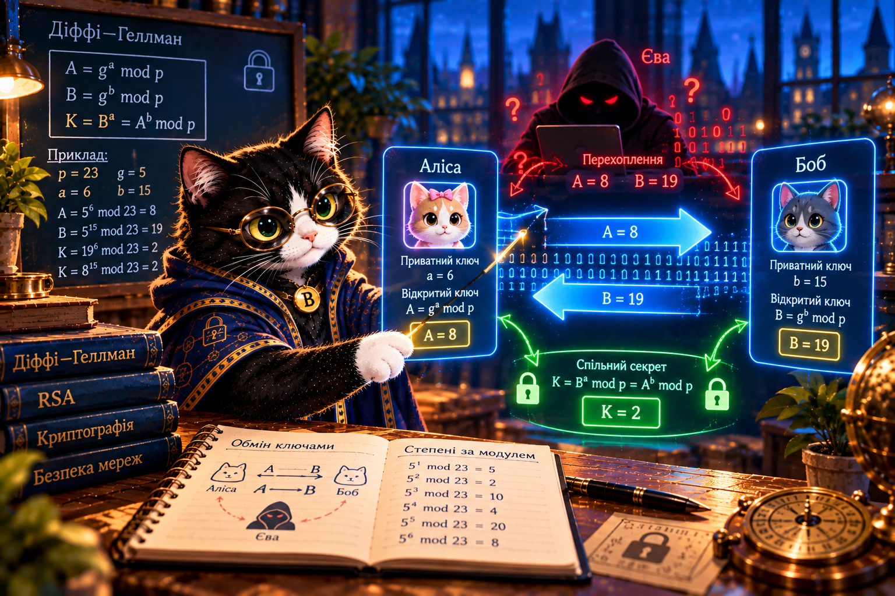

Діффі—Геллман — домовитися про секрет
Діффі—Геллман — домовитися про секрет
Як Аліса й Боб можуть домовитися про однаковий секрет, навіть якщо Єва бачить усе, що передається каналом?
Буч відкриває лабораторію обміну ключами. Дослідіть, що можна передавати відкрито, а що слід тримати в таємниці.

Проблема: як узгодити секрет відкрито?
Спочатку Аліса й Боб публічно обирають просте число p та основу g. Аліса таємно обирає a, Боб — b. Вони передають лише A = ga mod p та B = gb mod p. Обидва отримують однаковий секрет: K = Ba mod p = Ab mod p.
Це узгодження спільного секрету, а не безпосереднє шифрування повідомлення. У реальних протоколах отримане значення обробляють функцією виведення ключів і перевіряють автентичність співрозмовника.
Ручний приклад
p = 23, g = 5, a = 6, b = 15. Аліса надсилає A = 8, Боб — B = 19. Обидва обчислюють K = 2.
Єва бачить p, g, A і B, але не бачить a та b. На таких малих числах секрет легко відновити перебором — це лише навчальний приклад.
Швидкий симулятор
Що дослідимо?
Короткий Python
p, g = 23, 5
a, b = 6, 15
A = pow(g, a, p)
B = pow(g, b, p)
print(pow(B, a, p), pow(A, b, p)) # 2 2Запитання: чи доводить рівність секретів, що Аліса справді спілкується з Бобом? Перевірте це в практиці 4.